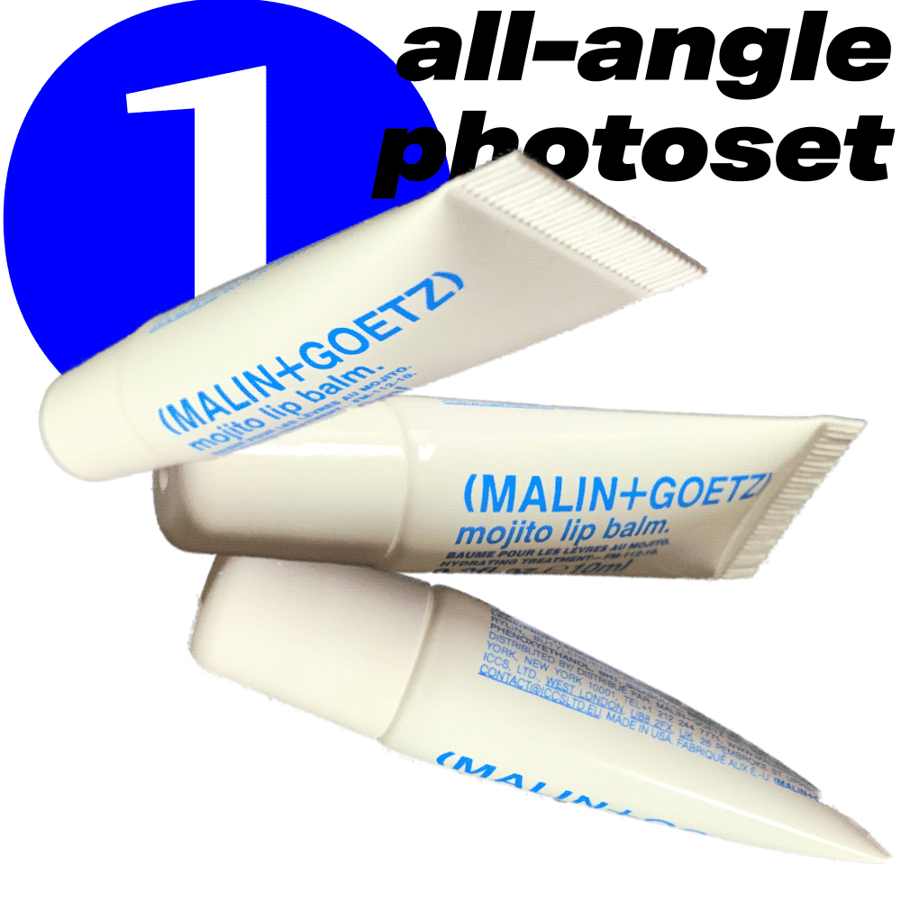

a poster exploring the pandemic experience; even when we attempt to recreate our pre-covid lives within isolation, they are only poor imitations of what once was.
with the pandemic requiring home isolation, my daily-use items have changed in response. these objects are translated into 2D forms that can be assembled into 3D paper duplicates. in doing so, the audience can attempt to quarantine as i do. with their artefact-riddled textures, simplified geometry, and the inevitable mistakes of assembly, the resulting paper models will vaguely resemble their original form.
with the pandemic requiring home isolation, my daily-use items have changed in response. these objects are translated into 2D forms that can be assembled into 3D paper duplicates. in doing so, the audience can attempt to quarantine as i do. with their artefact-riddled textures, simplified geometry, and the inevitable mistakes of assembly, the resulting paper models will vaguely resemble their original form.